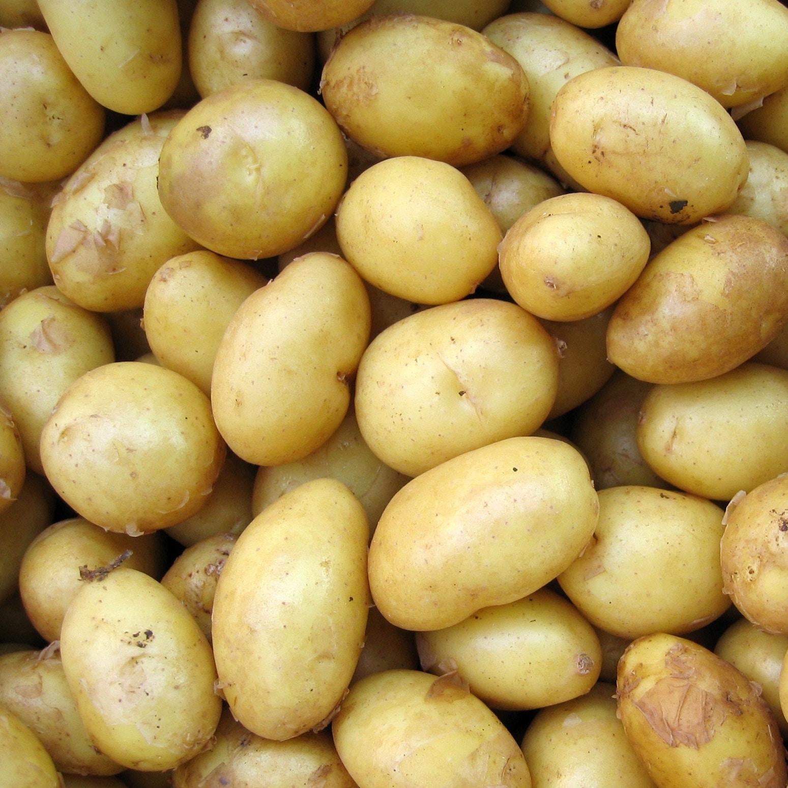
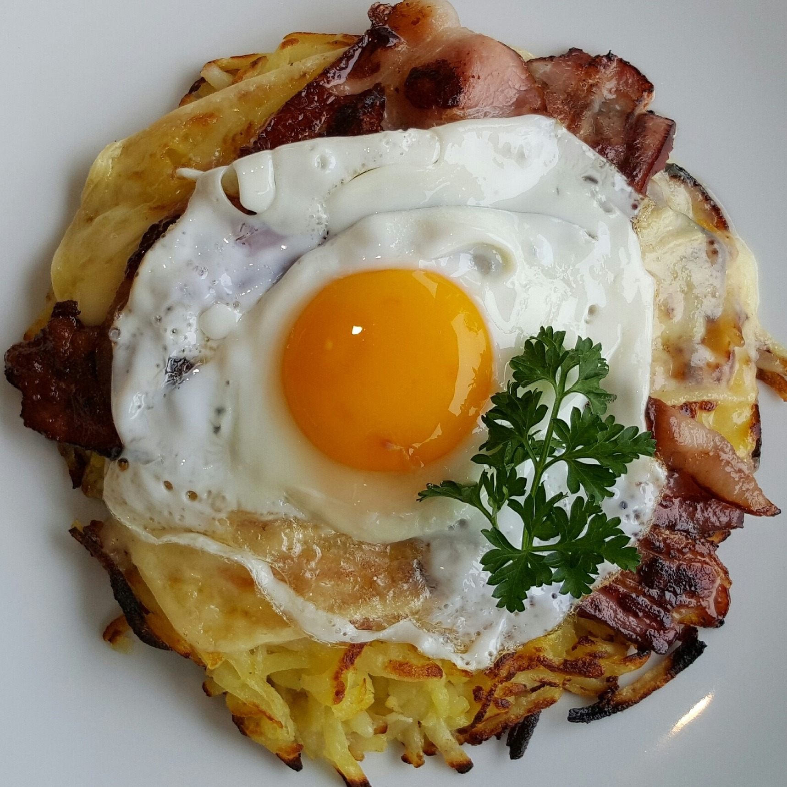

Ingredients
- 2 medium-sized waxy potatoes
- 1 tbsp butter
- 1 tbsp goose fat
- onion (optional)
- bacon (optional)
- egg, 1 or 2 per person (optional)


Method
- Parboil the potatoes in salted water until just tender, but not soft. Allow to cool, and chill for at least a couple of hours.
- Coarsely grate the potatoes and season. Heat half the fat in a small, heavy-based frying pan until sizzling, and then add the grated potato, allow to cook for a couple of minutes and then shape it into a flat cake, pressing down as lightly as possible. Allow to cook for a couple of minutes, then gently shake the pan to loosen the potato. Continue to cook for about 10 minutes until golden and crisp, then place a plate on top of the pan and invert it so the cake sits, cooked-side up, on the plate.
- Add the rest of the butter and goose fat to the pan and, when hot, slide the potato cake back into the pan the other way up. Cook for another 10 minutes, then serve.
Variations
To stick closer to the traditional Shepherd's pie, use regular potatoes instead of sweet potatoes for the mashed topping. These will need slightly longer to boil.
If you want to do a meateaters' version of Shepherd's Pie, see BBC Good Food's recipe here.